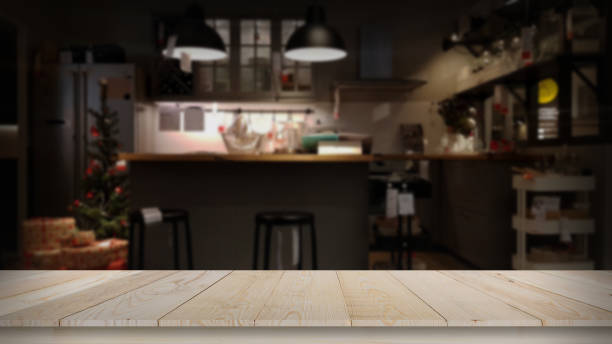

It's 11:30PM. You got home a few hours ago from work, but still had to do some extra work from home because you're overworked and underpaid... just like everyone else. You barely have time to eat at work, but you justify it by the fact that you're "dieting." After you finally hit send on that last email, you finally call it and say you'll finish the rest tomorrow. After all, tomorrow is only 30 minutes away and you'll be back at the office in less than 8 hours. Your boss scheduled a pre-work meeting to go over some inportant deadlines and to "motivate the team".
"How the hell does a 'pre-work meeting' even exist? Aren't I still at work?" you wonder.
Nonetheless, you realize you have to go becuase your livelihood depends on it. You just don't have the time nor the energy to hunt for another job. You get out of the shower and into you pj's and slip under the blanket to get ready for bed. Slowly, you close your eyes. "I need to sleep now so I can get at least 7 hours," you think to yourself.
2 minutes go by and your eyes jolt open. Fuck. You can't help but notice your stomach grumbling extremely loud. It feels like the whole room is vibrating. You close your eyes and try to ignore it again - this is just a part of dieting you tell yourself.
You roll onto your side and as you do so, you hear your stomach juices violenty swing to the otherside of your empty belly. There's no use in trying to sleep anymore, you're wide awake and starving. Slowly, you remove yourself from the covers and make your way to the kitchen.
It looks like heaven. Eagerly, you open the fridge to see what you got. "Nothing fancy," you think to yourself. Just something to hold you over- you're still "dieting" after all, right? You're only eating now because you couldn't all day so it's fair game. You open the fridge and look around: ground turkey, some cilantro, an avocado you didn't want going bad, a few eggs, bread, and some milk. You open the cupboards to find any straggling food items: dry pasta, unopened pasta sauce, and peanut butter.
"Okay, I can work with this," you think to yourself as you quickly brainstorm some food ideas.
...